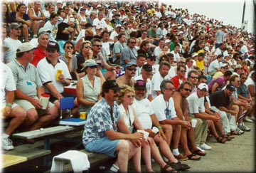

|
Right on the water's edge and located near the tight "Roostertail" turn, these grandstands offer an excellent view of the course. The Hydromart vendor area is behind the bleachers offering souvenirs, food, refreshments, beer & wine, and a display area. This whole area sells out before race day, so plan ahead! These seating plans are 2-day reserved seating passes for Saturday and Sunday. This area is FREE for the practice and qualifying sessions on Thursday & Friday!
 (Photo copyright Joe Dabliz) There are three seating plans in the Waterworks Park bleachers. In the photo below, the Commodore Club (Plan #1) is generally the area on the right. At the left end is the seating area for Singles, Pairs and Groups (Plan #3). The center area (Plan #2) is for Corporate seating for groups of 25 or more.
![[Waterworks Park photo]](wtrwork1.gif)
(Photo copyright Joe Pfeiffer)
All contents Copyright © 1997-2002 Spirit of Detroit THUNDERFEST, except where noted.
Web page created by Brian Reed.
|